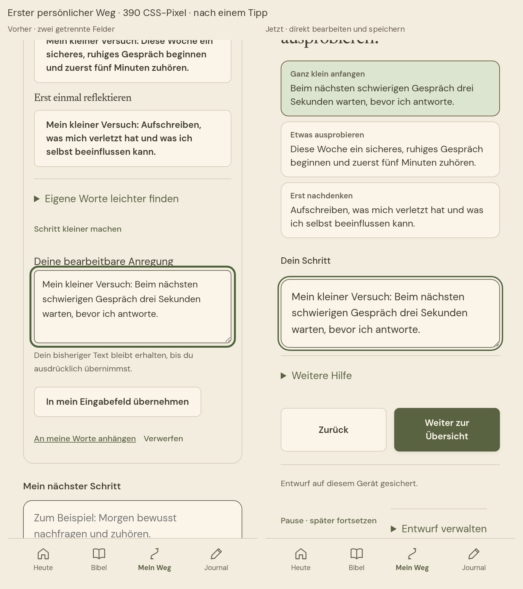
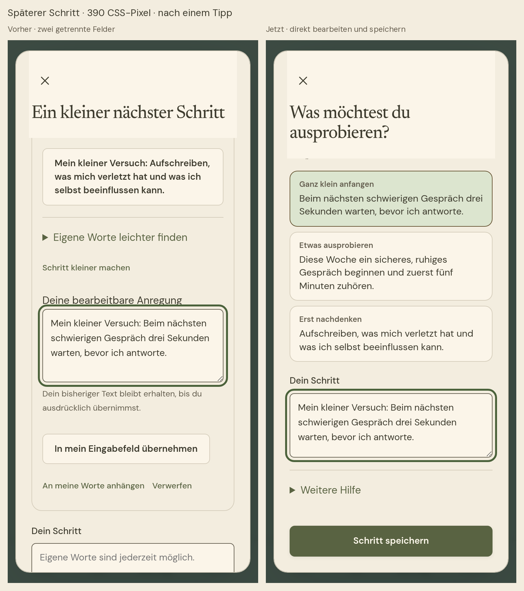

Bericht als PDF · Maschinenresultate
Vorher und nachher – echte Browserbilder
Papier-Theme, gleiche Viewportgröße und DPR 2. Die Aufnahmen wurden nicht retuschiert.

Erster persönlicher Weg · 390 × 844 CSS-Pixel · Bilder zum Vergrößern öffnen
Späterer Schritt · 390 × 844 CSS-Pixel · Bilder zum Vergrößern öffnenWeitere Ansichten
FaithPath – Ein einfacher persönlicher Schritt
Stand: 4. November 2026. Branch: feature/simplified-step-experience-20261104.
Basis: 501f24909ed984c2edf5a8b05e5ffb8d0dc5b990 aus integration/faithpath-guided-steps-a51-20261104. Geprüfter Runtime-Commit: f193318b07db46d3362c0145fa4628b576d2a330. Build-ID: FP4-20261104-G-SIMPLE-STEPS-QA1.
Das Ergebnis
Die Schritt-Hilfe ist in der echten App vereinfacht: im geführten ersten Weg, beim späteren Hinzufügen oder Bearbeiten eines Schritts und beim direkten Anlegen eines Wegs.
- „Was möchtest du ausprobieren?“ führt unmittelbar zu höchstens drei bestehenden Vorschlägen: „Ganz klein anfangen“, „Etwas ausprobieren“, „Erst nachdenken“. - Ein Tipp setzt den vollständigen Vorschlag direkt in das einzige bearbeitbare Feld. Dort kann man ihn ändern oder ganz eigene Worte schreiben. - Unveränderte Vorschläge lassen sich direkt wechseln. Es gibt keine zusätzliche Übernahme, keinen zweiten Editor und keine zusätzliche Themenabfrage. - „Schritt speichern“ speichert den späteren Schritt. Im ersten Weg führt „Weiter zur Übersicht“ zur bestehenden Gesamtprüfung; erst deren Bestätigung legt den Weg an. - Satzanfänge, „Schritt kleiner machen“ und das Wiederverwenden eigener Worte liegen hinter „Weitere Hilfe“. Export und Verwerfen des ersten Entwurfs bleiben erreichbar, sind auf diesem Schrittbildschirm aber ebenfalls eingeklappt. - Nach einer Auswahl rückt der Bearbeitungsbereich in die Bildschirmmitte. Dadurch sind Feld und Hauptaktion auch auf kurzen Bildschirmen schnell erreichbar.
Die geprüften Vorschlagstexte sind unverändert. Nur der immer gleiche Vorspann „Mein kleiner Versuch:“ wird auf den Auswahlflächen zur besseren Übersicht weggelassen; im eingesetzten Text bleibt er enthalten.
Schutz eigener Worte und alter Entwürfe
Selbst geschriebener Text wird niemals durch bloßes Antippen ersetzt. Eine kurze Bestätigung erlaubt „Meine Worte behalten“ oder „Vorschlag verwenden“. Die vorherigen eigenen Worte bleiben während der Bearbeitung im vorhandenen Entwurf wiederverwendbar. Ein Wechsel zwischen unveränderten Vorschlägen verändert diese Sicherung nicht.
Auch ein selbst getippter Text, der zufällig genau einem Vorschlag entspricht, bleibt persönliche Eingabe. Die Anwendung entscheidet anhand des tatsächlichen Eingabevorgangs, nicht allein durch einen Textvergleich.
Das vorhandene Draft-Format erhält zwei optionale Textwerte innerhalb von values: stepSuggestion kennzeichnet den unveränderten eingesetzten Vorschlag; stepOwnText hält die letzten selbst geschriebenen Worte fest. Keine neuen LocalStorage-Schlüssel, keine neue V5-Datenstruktur und keine Migration. Die bisherigen Entwurfs- und Speichertransaktionen bleiben maßgeblich. Beim ausdrücklichen Speichern wird wie bisher nur der gewählte endgültige Schritt übernommen und der zugehörige Entwurf beendet; dies ist kein neues Versionsarchiv.
Ältere Entwürfe mit einem getrennten stepCandidate behalten beide Texte. Die frühere Anregung bleibt optional sichtbar und kann geschützt in dasselbe einzige Feld übernommen werden. Die vorhandene guidedTopic-Angabe wird als verborgenes Draft-Feld erhalten. Der Review fand hier zunächst einen Verlust der Themenzuordnung nach erneutem Speichern; der Ablauf wurde reproduziert, korrigiert und mit einem erneuten Fortsetzen geprüft.
Historische Wege enthalten nicht immer eine eigene Lebensthema-ID. Bei First-Seed-Wegen wird das Thema aus der eindeutigen vorhandenen ursprünglichen Bibelzuordnung plus Kategorie wiedergefunden. Alle 18 Themen sind dafür geprüft. Ohne eindeutige Zuordnung verwendet die Hilfe die vorhandenen Kategorien. Titel, Anliegen, Gebete und Journaltexte werden dafür nicht analysiert. Es erscheint keine zusätzliche Themenauswahl.
Technische Änderungen
- src/step-selection.js: kleine reine Übergangsfunktionen für Auswahl und persönliche Eingaben. - src/step-help.js: eine gemeinsame Oberfläche, Überschreibschutz, optionale Hilfen und Draft-Anbindung. - src/first-seed/view.js und controller.js: gemeinsames Feld und Übernahme seiner Draft-Metadaten; bestehende Gesamtprüfung und Transaktion bleiben bestehen. - src/app.js: bestehende Schrittformulare, Eingabeereignisse und Kategorieaktualisierung angebunden. Kein großer Controller-Umbau. - src/verbunden/seed.css: kompaktere Auswahlflächen in allen vier Themes. - src/version.js: eindeutige QA-Build-ID für ein echtes Update.
Vorhandene Browserprüfungen wurden dort angepasst, wo sie ausdrücklich die entfernte Zweifeld-Bedienung oder alte Beschriftungen erwarteten. Die Speicher-, Verknüpfungs-, Fortschritts- und Wiederherstellungsprüfungen bleiben bestehen. Zwei allgemeine Testselektoren verwenden jetzt die unveränderten Feld-/Formularverträge statt der alten Beschriftungen. Kein fachlicher Test wurde übersprungen.
Tatsächlich ausgeführte Prüfungen
| Prüfung | Ergebnis | Nachweis |
| Unveränderte Baseline | 257 Unit-Tests bestanden | evidence/baseline-unit.log |
| Gesamte Unit-/Regression-Suite | 264 bestanden, 0 Fehler, 0 übersprungen | evidence/unit.log |
| Gezielte neue Bedienabläufe | 7 Funktionsszenarien bestanden | evidence/browser/results.json |
| Mobile Schrittansichten | 32 Zustände: beide Abläufe, 375/390 CSS-Pixel, vier Themes, 100/200 % Text | gleicher Browserbericht |
| Bisherige A5.1-/Weg-Regression | 7 Prüfgruppen einschließlich 200 Layout-/Routenkombinationen bestanden | evidence/regression-browser/results.json |
| Allgemeine App-Browserregression | 12 Szenarien bestanden | evidence/core-browser/browser-results.json |
| Vollständiger erster Weg | 7 Prüfungen einschließlich Neustart, doppeltem Tippen, echtem Export/Import und Offlinebetrieb bestanden | evidence/first-seed/results.json |
| Fehlerfälle | 4 bestanden: leere Eingabe, Quota-Fehler, fremder/beschädigter Entwurf, nicht verfügbarer Bibeltext | evidence/faults/results.json |
| Echtes Service-Worker-Update | 4 Prüfgruppen von GUIDED-A51-QA1 zur neuen Version bestanden, einschließlich gescheiterter Installation und unveränderter Speicherbytes | evidence/update/results.json |
| Accessibility automatisch | 20 Axe-Scans, 0 gemeldete Verstöße | evidence/accessibility.json |
| Lint und Modulprüfung | 0 Lintfehler, 5 unveränderte Bestandswarnungen; Modulprüfung bestanden | evidence/lint.log, modules.log |
| Datenverträge | Schema V5, bestehende Schlüssel und geschützte Datenquellen unverändert | evidence/contracts.log |
| Reproduzierbarkeit | Zwei Builds bytegleich; 282 Dateien und 132 Bibeldateien geprüft | evidence/build-integrity.json |
Die neuen Funktionsprüfungen umfassen unmittelbare Auswahl, Bearbeitung, Wechsel mit Abbruch und ausdrücklicher Ersetzung, Pause/Neustart, Wiederverwenden eigener Worte, identisch selbst getippte Katalogtexte, alte Zweifeld-Entwürfe, Kategorieänderung sowie wiederholtes Fortsetzen mit ausdrücklich gewähltem Thema.
Die Screenshots stammen aus echten Chromium-Browserläufen mit synthetischen Daten. 375×667 und 390×844 sind simulierte CSS-Viewports mit DPR 2, keine physischen iPhones. Die Vorher-Aufnahmen stammen aus dem unveränderten Basisbuild; Nachher-Aufnahmen zeigen den neuen Build. Für die Vergleichsbilder werden lediglich diese unveränderten Aufnahmen nebeneinandergesetzt.
Integrität und Build
209 geschützte Dateien sind bytegleich mit der Basis, darunter der gesamte vorhandene Vorschlagskatalog, Lebensthemen, Bibel-/Quizdaten, A5.1-Runtime und -Bilder, Baumregeln, Store, Draft-Transaktionen und First-Seed-Datenmodell. Auch die Baum-CSS außerhalb des Schrittbereichs ist unverändert. evidence/integrity.json enthält die Dateihashes.
Content-Hash: 8630cf25034cbd8ee28060b2318addc25d26611317439d08ac2fa5cae938e309.
Build-Hash: 61b3c2aef52a01e0cf8e3e8c0a0e532ce238f4568b11ec089e1170ce10be7f7f.
Der abschließende Build ist lokal reproduzierbar. Die Vorschau ist ein vollständiger statischer App-Build, keine kopierte Demo. Es gibt keine Veröffentlichung, keinen Merge und keinen Eingriff in Produktionsdaten.
Offene Grenzen und Empfehlung
Die automatischen Axe-Prüfungen enthalten zusätzlich 24 nicht automatisch entscheidbare Regel-/Ansichtsgruppen. Die vier Dialogtitel-Kontraste wurden anhand der tatsächlich berechneten Themefarben ergänzend geprüft. Die übrigen 20 Gruppen betreffen unter anderem dynamische Menü-ARIA-Referenzen sowie bestehende Reflexions-/Willkommenstexte und sind als manuelle Prüfung dokumentiert. Dies ist keine vollständige WCAG-Freigabe.
Echte iPhone-/Safari-/VoiceOver- und Bildschirmtastaturprüfungen sind offen. Ebenso ist noch nicht mit neuen Testpersonen belegt, wie schnell sie die Auswahl verstehen. Die automatischen Abläufe zeigen die technische Bedienbarkeit, keine erfundenen Nutzerstudienergebnisse.
Empfehlung: CONDITIONAL GO für die isolierte Vorschau und den nächsten Nutzertest. Die angeforderten Abläufe funktionieren und die Datenverträge sind erhalten. Vor einer produktiven Freigabe stehen die genannten manuellen Geräte-/Accessibility- und Verständlichkeitsprüfungen aus. Kein automatischer Merge oder Release.
Wiederholen
Mit den vorhandenen Node-/Python-Abhängigkeiten:
npm test
npm run lint
npm run check:modules
npm run check:contracts
npm run build
QA_ROOT=dist node tests/simplified-steps-browser.mjs
QA_ROOT=dist QA_RESULT=qa-output/step-a11y.json node tests/guided-a51-a11y.mjs
Die Python-Bild-/PDF-Werkzeuge dienen nur der QA-Dokumentation. Es wurden keine Runtime-Abhängigkeiten ergänzt. Das fertige Vorschau-ZIP wird entpackt und über einen lokalen HTTP-Server gestartet; keine direkte file://-Installation einer PWA voraussetzen.